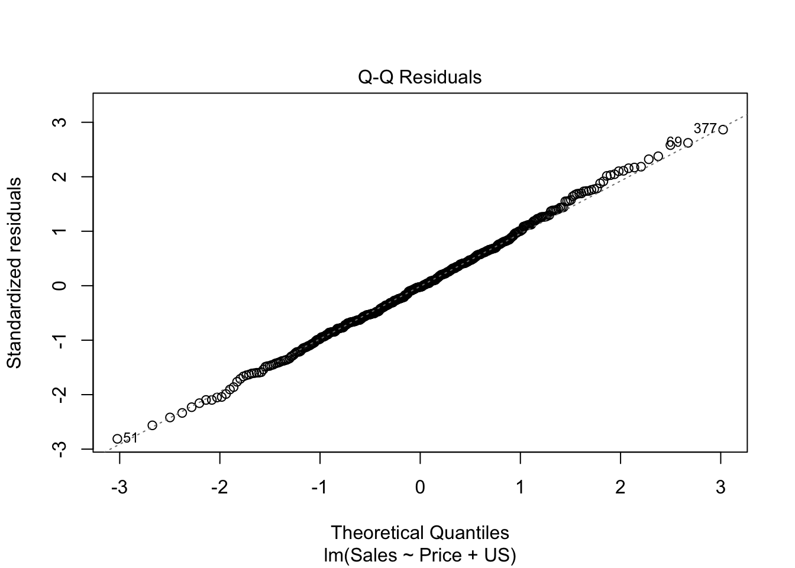
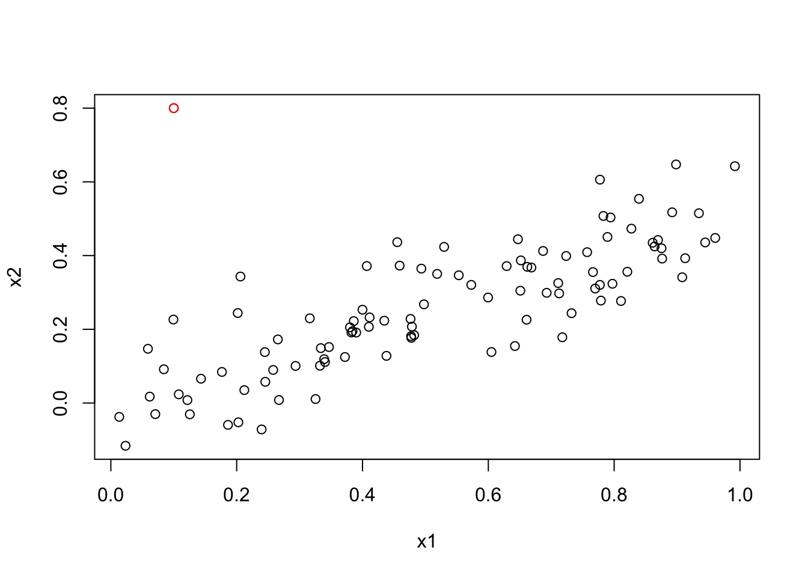

# A tibble: 4 × 5
term estimate std.error statistic p.value
<chr> <dbl> <dbl> <dbl> <dbl>
1 (Intercept) 1.04 0.271 3.85 1.73e- 4
2 Petal.Width 0.558 0.123 4.55 1.10e- 5
3 Petal.Length -0.586 0.0621 -9.43 8.75e-17
4 Sepal.Length 0.607 0.0622 9.77 1.20e-174.1 Notes
4.1.1 Simple linear regression
4.1.2 Multiple linear regression
https://coltongearhart.github.io/regression/notes-multiple-regression-1.html and https://coltongearhart.github.io/regression/notes-multiple-regression-2.html
4.1.3 Other considerations in the regression model
https://coltongearhart.github.io/regression/notes-reg-models-quan-and-qual.html
Things to study more from other text
Leverage
VIF
4.1.4 Comparison of linear regression with \(K\)-nearest neighbors
As discussed earlier, non-parametric methods do not explicitly assume a parametric form for \(f(X)\), and thereby provide an alternative and more flexible approach for performing regression. Here we consider one of the simplest and best-known non-parametric methods,\(K\)-nearest neighbors regression (KNN regression). The KNN regression method is closely related to the KNN classifier discussed in the previous chapter. Given a value for \(K\) and a prediction point \(x_0\), KNN regression first identifies the \(K\) training observations that are closest to \(x_0\), represented by \(\cal{N}_0\). It then estimates \(f(x_0)\) using the average of all the training responses in \(\cal{N}_0\). In other words,
\[ \hat{f}(x_0) = \frac{1}{K}\sum_{x_i \in \cal{N}_0} y_i \]
We see that when \(K = 1\), the KNN fit perfectly interpolates the training observations, and consequently takes the form of a step function. When \(K = 9\), the KNN fit still is a step function, but averaging over nine observations results in much smaller regions of constant prediction, and consequently a smoother fit. In general, the optimal value for K will depend on the bias-variance tradeoff.
A small value for \(K\) provides the most flexible fit, which will have low bias but high variance. This variance is due to the fact that the prediction in a given region is entirely dependent on just one observation. In contrast, larger values of \(K\) provide a smoother and less variable fit; the prediction in a region is an average of several points, and so changing one observation has a smaller effect. However, the smoothing may cause bias by masking some of the structure in \(f(X)\).
In what setting will a parametric approach such as least squares linear regression outperform a non-parametric approach such as KNN regression? The answer is simple: the parametric approach will outperform the non- parametric approach if the parametric form that has been selected is close to the true form of \(f\).
Figure 3.17 provides an example with data generated from a one-dimensional linear regression model. The black solid lines represent \(f(X)\), while the blue curves correspond to the KNN fits using \(K = 1\) and \(K = 9\). In this case, the \(K = 1\) predictions are far too variable, while the smoother \(K = 9\) fit is much closer to \(f(X)\). **However, since the true relationship is linear, it is hard for a non-parametric approach to compete with linear regression: a non-parametric approach incurs a cost in variance that is not offset by a reduction in bias.*
Figure 3.19 examines the relative performances of least squares regression and KNN under increasing levels of non-linearity in the relationship between \(X\) and \(Y\). In more non-linear situation, KNN substantially outperforms linear regression for all values of \(K\). Note that as the extent of non-linearity increases, there is little change in the test set MSE for the non-parametric KNN method, but there is a large increase in the test set MSE of linear regression.
In a real life situation in which the true relationship is unknown, one might suspect that KNN should be favored over linear regression because it will at worst be slightly inferior to linear regression if the true relationship is linear, and may give substantially better results if the true relationship is non-linear. But in reality, even when the true relationship is highly non-linear, KNN may still provide inferior results to linear regression. But in higher dimensions, KNN often performs worse than linear regression.
Figure 3.20 considers the same strongly non-linear situation as in the second row of Figure 3.19, except that we have added additional noise predictors that are not associated with the response. But for \(p = 3\) the results are mixed, and for \(p \ge 4\) linear regression is superior to KNN. In fact, the increase in dimension has only caused a small deterioration in the linear regression test set MSE, but it has caused more than a ten-fold increase in the MSE for KNN. This decrease in performance as the dimension increases is a common problem for KNN, and results from the fact that in higher dimensions there is effectively a reduction in sample size. In this data set there are 50 training observations; when \(p = 1\), this provides enough information to accurately estimate \(f(X)\). However, spreading 50 observations over \(p = 20\) dimensions results in a phenomenon in which a given observation has no nearby neighbors – this is the so-called curse of dimensionality.
As a general rule, parametric methods will tend to outperform non-parametric approaches when there is a small number of observations per predictor. Even when the dimension is small, we might prefer linear regression to KNN from an interpretability standpoint. If the test MSE of KNN is only slightly lower than that of linear regression, we might be willing to forego a little bit of prediction accuracy for the sake of a simple model that can be described in terms of just a few coefficients, and for which p-values are available.
4.2 Lab
< just basic regression commands >
Some key points
-
hatvalues(< mod >): Computes the hat values for each observation.- Then can run
hatvalues(< mod >) %>% which.maxto get the largest one.
- Then can run
car::vif(): Computes the VIF for each predictor.-
In the formula,
poly()by default orthogonalizes the predictors, so they are not simply a sequence of higher powers of the argument.- However, a linear model applied to the output of the
poly()function will have the same fitted values as a linear model applied to the raw polynomials (raw = TRUE; although the coefficient estimates, standard errors, and p-values will differ).
- However, a linear model applied to the output of the
contrasts(< factor >): Returns the coding that R uses for the dummy variables.
4.3 Exercises
4.3.1 Conceptual
Question 1
Describe the null hypotheses to which the p-values shown below correspond. Explain what conclusions you can draw based on these p-values. Your explanation should be phrased in terms of the predictors, rather than in terms of the coefficients of the linear model.
For Petal.Length:
\[ \begin{align*} H_0&: \beta_{\text{Petal.Length}} = 0 \\ H_A&: \beta_{\text{Petal.Length}} \ne 0 \end{align*} \]
# fit model
mod_iris <- lm(Sepal.Width ~ Petal.Width + Petal.Length + Sepal.Length, data = iris, x = TRUE)
# verify p-value
beta_hat <- coef(mod_iris)["Petal.Length"]
X <- mod_iris$x
se_beta_hats <- summary(mod_iris)$sigma^2 * solve(t(X) %*% (X))
se_beta_hat <- sqrt(se_beta_hats[3,3])
pt(q = beta_hat / se_beta_hat, df = nobs(mod_iris) - length(coef(mod_iris)), lower.tail = TRUE) * 2 %>% as.numeric Petal.Length
0.00000000000000008753029 Question 2
Carefully explain the differences between the KNN classifier and KNN regression methods.
Simply stated, The KNN classifier is categorical and assigns a value based on the most frequent observed category among \(K\) nearest neighbors, whereas KNN regression assigns a continuous variable, the average of the response variables for the \(K\) nearest neighbors. This represents two different summary functions, which are: for classification
\[ \hat{f}(x_0) = \text{max}_j\bigg\{\frac{1}{K}\sum_{x_i \in \cal{N}_0} I(y_i = j)\bigg\} \]
and for regression
\[ \hat{f}(x_0) = \frac{1}{K}\sum_{x_i \in \cal{N}_0} y_i \]
Question 3
Suppose we have a data set with five predictors, \(X_1\) = GPA, \(X_2\) = IQ, \(X_3\) = Level (1 for College and 0 for High School), \(X_4\) = Interaction between GPA and IQ, and \(X_5\) = Interaction between GPA and Level. The response is starting salary after graduation (in thousands of dollars). Suppose we use least squares to fit the model, and get \(\hat\beta_0 = 50\), \(\hat\beta_1 = 20\), \(\hat\beta_2 = 0.07\), \(\hat\beta_3 = 35\), \(\hat\beta_4 = 0.01\), \(\hat\beta_5 = -10\).
- Which answer is correct, and why?
- For a fixed value of IQ and GPA, high school graduates earn more on average than college graduates.
- For a fixed value of IQ and GPA, college graduates earn more on average than high school graduates.
- For a fixed value of IQ and GPA, high school graduates earn more on average than college graduates provided that the GPA is high enough.
- For a fixed value of IQ and GPA, college graduates earn more on average than high school graduates provided that the GPA is high enough.
False: \(\hat{\beta}_3 > 0\)
False: Have to take into account the interactions
True: \(\hat{\beta}_5 = -10\), which means the slope for GPA decreases by 10 for college students. So for large enough GPAs, high school plane surpasses that of college
False: above reason
# fitted response curve
model <- function(gpa, iq, level) {
50 +
gpa * 20 +
iq * 0.07 +
level * 35 +
gpa * iq * 0.01 +
gpa * level * -10
}
# set predictors
x <- seq(1, 5, length = 10)
y <- seq(1, 200, length = 20)
# calculate response
college <- outer(x, y, FUN = model, level = 1) %>% t
high_school <- outer(x, y, FUN = model, level = 0) %>% t
# plot surfaces
plot_ly(x = x, y = y) %>%
add_surface(
z = ~college,
colorscale = list(c(0, 1), c("rgb(107,184,214)", "rgb(0,90,124)")),
colorbar = list(title = "College")) %>%
add_surface(
z = ~high_school,
colorscale = list(c(0, 1), c("rgb(255,112,184)", "rgb(128,0,64)")),
colorbar = list(title = "High school")) %>%
layout(scene = list(
xaxis = list(title = "GPA"),
yaxis = list(title = "IQ"),
zaxis = list(title = "Salary")))Error in layout(., scene = list(xaxis = list(title = "GPA"), yaxis = list(title = "IQ"), : unused argument (scene = list(xaxis = list(title = "GPA"), yaxis = list(title = "IQ"), zaxis = list(title = "Salary")))
- Predict the salary of a college graduate with IQ of 110 and a GPA of 4.0.
model(gpa = 4, iq = 110, level = 1)[1] 137.1
- True or false: Since the coefficient for the GPA/IQ interaction term is very small, there is very little evidence of an interaction effect. Justify your answer.
False. Scale is based on units, need information about the significance.
Question 4
I collect a set of data (\(n = 100\) observations) containing a single predictor and a quantitative response. I then fit a linear regression model to the data, as well as a separate cubic regression, i.e. \(Y = \beta_0 + \beta_1 X + \beta_2 X^2 + \beta_3 X^3 + \epsilon\).
- Suppose that the true relationship between \(X\) and \(Y\) is linear, i.e. \(Y = \beta_0 + \beta_1X + \epsilon\). Consider the training residual sum of squares (RSS) for the linear regression, and also the training RSS for the cubic regression. Would we expect one to be lower than the other, would we expect them to be the same, or is there not enough information to tell? Justify your answer.
The more complex model will have a smaller training RSS because of the lower bias.
- Answer (a) using test rather than training RSS.
Given that the true model is actually linear, the more complex model will have a larger testing RSS because of the larger variance (overfitting).
- Suppose that the true relationship between \(X\) and \(Y\) is not linear, but we don’t know how far it is from linear. Consider the training RSS for the linear regression, and also the training RSS for the cubic regression. Would we expect one to be lower than the other, would we expect them to be the same, or is there not enough information to tell? Justify your answer.
The further from linear the true model gets, the larger the training RSS will become for the linear model because of low flexibility and high bias.
- Answer (c) using test rather than training RSS.
Same as (c).
Question 5
Consider the fitted values that result from performing linear regression without an intercept. In this setting, the \(i\)th fitted value takes the form \[ \hat{y}_i = x_i\hat\beta \] where \[ \hat{\beta} = \left(\sum_{i=1}^nx_iy_i\right) / \left(\sum_{i' = 1}^n x^2_{i'}\right). \] Show that we can write \[ \hat{y}_i = \sum_{i' = 1}^na_{i'}y_{i'} \] What is \(a_{i'}\)? Note: We interpret this result by saying that the fitted values from linear regression are linear combinations of the response values.
\[ \begin{align} \hat{y}_i & = x_i \frac{\sum_{i=1}^nx_iy_i}{\sum_{i' = 1}^n x^2_{i'}} \\ & = x_i \frac{\sum_{i'=1}^nx_{i'}y_{i'}}{\sum_{i'' = 1}^n x^2_{i''}} \\ & = \frac{\sum_{i'=1}^n x_i x_{i'}y_{i'}}{\sum_{i'' = 1}^n x^2_{i''}} \\ & = \sum_{i'=1}^n \frac{ x_i x_{i'}y_{i'}}{\sum_{i'' = 1}^n x^2_{i''}} \\ & = \sum_{i'=1}^n \frac{ x_i x_{i'}}{\sum_{i'' = 1}^n x^2_{i''}} y_{i'} \end{align} \]
Question 6
Using (3.4), argue that in the case of simple linear regression, the least squares line always passes through the point \((\bar{x}, \bar{y})\).
\[ \begin{align} \hat{y} &= \hat\beta_0 + \hat\beta_1\bar{x} \\ &= (\bar{y} - \hat\beta_1\bar{x}) + \hat\beta_1\bar{x} \\ &= \bar{y} \end{align} \]
Question 7
It is claimed in the text that in the case of simple linear regression of \(Y\) onto \(X\), the \(R^2\) statistic (3.17) is equal to the square of the correlation between \(X\) and \(Y\) (3.18). Prove that this is the case. For simplicity, you may assume that \(\bar{x} = \bar{y} = 0\).
< just algebra after making simplifying assumptions >
4.3.2 Applied
Question 8
# read in data
data_car <- ISLR2::Auto
plot(mpg ~ horsepower, data_car)
# fit model
mod_car <- lm(mpg ~ horsepower, data_car)
plot(mpg ~ horsepower, data_car)
abline(mod_car, col = "red")glimpse(mod_car)List of 12
$ coefficients : Named num [1:2] 39.936 -0.158
..- attr(*, "names")= chr [1:2] "(Intercept)" "horsepower"
$ residuals : Named num [1:392] -1.416 1.109 1.741 -0.259 -0.838 ...
..- attr(*, "names")= chr [1:392] "1" "2" "3" "4" ...
$ effects : Named num [1:392] -464.206 120.138 1.745 -0.255 -0.819 ...
..- attr(*, "names")= chr [1:392] "(Intercept)" "horsepower" "" "" ...
$ rank : int 2
$ fitted.values: Named num [1:392] 19.4 13.9 16.3 16.3 17.8 ...
..- attr(*, "names")= chr [1:392] "1" "2" "3" "4" ...
$ assign : int [1:2] 0 1
$ qr :List of 5
..$ qr : num [1:392, 1:2] -19.799 0.0505 0.0505 0.0505 0.0505 ...
.. ..- attr(*, "dimnames")=List of 2
.. ..- attr(*, "assign")= int [1:2] 0 1
..$ qraux: num [1:2] 1.05 1.08
..$ pivot: int [1:2] 1 2
..$ tol : num 0.0000001
..$ rank : int 2
..- attr(*, "class")= chr "qr"
$ df.residual : int 390
$ xlevels : Named list()
$ call : language lm(formula = mpg ~ horsepower, data = data_car)
$ terms :Classes 'terms', 'formula' language mpg ~ horsepower
.. ..- attr(*, "variables")= language list(mpg, horsepower)
.. ..- attr(*, "factors")= int [1:2, 1] 0 1
.. .. ..- attr(*, "dimnames")=List of 2
.. ..- attr(*, "term.labels")= chr "horsepower"
.. ..- attr(*, "order")= int 1
.. ..- attr(*, "intercept")= int 1
.. ..- attr(*, "response")= int 1
.. ..- attr(*, ".Environment")=<environment: R_GlobalEnv>
.. ..- attr(*, "predvars")= language list(mpg, horsepower)
.. ..- attr(*, "dataClasses")= Named chr [1:2] "numeric" "numeric"
.. .. ..- attr(*, "names")= chr [1:2] "mpg" "horsepower"
$ model :'data.frame': 392 obs. of 2 variables:
..$ mpg : num [1:392] 18 15 18 16 17 15 14 14 14 15 ...
..$ horsepower: int [1:392] 130 165 150 150 140 198 220 215 225 190 ...
..- attr(*, "terms")=Classes 'terms', 'formula' language mpg ~ horsepower
.. .. ..- attr(*, "variables")= language list(mpg, horsepower)
.. .. ..- attr(*, "factors")= int [1:2, 1] 0 1
.. .. .. ..- attr(*, "dimnames")=List of 2
.. .. ..- attr(*, "term.labels")= chr "horsepower"
.. .. ..- attr(*, "order")= int 1
.. .. ..- attr(*, "intercept")= int 1
.. .. ..- attr(*, "response")= int 1
.. .. ..- attr(*, ".Environment")=<environment: R_GlobalEnv>
.. .. ..- attr(*, "predvars")= language list(mpg, horsepower)
.. .. ..- attr(*, "dataClasses")= Named chr [1:2] "numeric" "numeric"
.. .. .. ..- attr(*, "names")= chr [1:2] "mpg" "horsepower"
- attr(*, "class")= chr "lm"# get strength
mod_car %>% broom::glance() %>% pull(r.squared)[1] 0.6059483# get coef
broom::tidy(mod_car)# A tibble: 2 × 5
term estimate std.error statistic p.value
<chr> <dbl> <dbl> <dbl> <dbl>
1 (Intercept) 39.9 0.717 55.7 1.22e-187
2 horsepower -0.158 0.00645 -24.5 7.03e- 81# inference
# -> prediction of new obs
predict(mod_car, newdata = data.frame(horsepower = c(98)), interval = "pred") fit lwr upr
1 24.46708 14.8094 34.12476predict(mod_car, newdata = data.frame(horsepower = c(98)), interval = "conf") fit lwr upr
1 24.46708 23.97308 24.96108# diagnostic plots
plot(mod_car, which = 1:2)# -> nonlinearity and unequal varianceQuestion 9
# scatterplot matrix
pairs(data_car)# correlation matrix
cor(data_car[, 1:8]) mpg cylinders displacement horsepower weight
mpg 1.0000000 -0.7776175 -0.8051269 -0.7784268 -0.8322442
cylinders -0.7776175 1.0000000 0.9508233 0.8429834 0.8975273
displacement -0.8051269 0.9508233 1.0000000 0.8972570 0.9329944
horsepower -0.7784268 0.8429834 0.8972570 1.0000000 0.8645377
weight -0.8322442 0.8975273 0.9329944 0.8645377 1.0000000
acceleration 0.4233285 -0.5046834 -0.5438005 -0.6891955 -0.4168392
year 0.5805410 -0.3456474 -0.3698552 -0.4163615 -0.3091199
origin 0.5652088 -0.5689316 -0.6145351 -0.4551715 -0.5850054
acceleration year origin
mpg 0.4233285 0.5805410 0.5652088
cylinders -0.5046834 -0.3456474 -0.5689316
displacement -0.5438005 -0.3698552 -0.6145351
horsepower -0.6891955 -0.4163615 -0.4551715
weight -0.4168392 -0.3091199 -0.5850054
acceleration 1.0000000 0.2903161 0.2127458
year 0.2903161 1.0000000 0.1815277
origin 0.2127458 0.1815277 1.0000000
Call:
lm(formula = mpg ~ . - name, data = data_car, x = TRUE)
Residuals:
Min 1Q Median 3Q Max
-9.5903 -2.1565 -0.1169 1.8690 13.0604
Coefficients:
Estimate Std. Error t value Pr(>|t|)
(Intercept) -17.218435 4.644294 -3.707 0.00024 ***
cylinders -0.493376 0.323282 -1.526 0.12780
displacement 0.019896 0.007515 2.647 0.00844 **
horsepower -0.016951 0.013787 -1.230 0.21963
weight -0.006474 0.000652 -9.929 < 0.0000000000000002 ***
acceleration 0.080576 0.098845 0.815 0.41548
year 0.750773 0.050973 14.729 < 0.0000000000000002 ***
origin 1.426141 0.278136 5.127 0.000000467 ***
---
Signif. codes: 0 '***' 0.001 '**' 0.01 '*' 0.05 '.' 0.1 ' ' 1
Residual standard error: 3.328 on 384 degrees of freedom
Multiple R-squared: 0.8215, Adjusted R-squared: 0.8182
F-statistic: 252.4 on 7 and 384 DF, p-value: < 0.00000000000000022# is a relationship between Y and the set of Xs
# -> displacement, weight, year and origin appear to be significant predictors
# -> hat(beta)_year > 0 ==> newer cars get better gas mileage
# diagnostic plots
plot(mod_car_mlr, which = 1:2)
# -> unequal variance
# search for higher order effects
# get residuals
e <- residuals(mod_car_mlr)
# plot against each X
nms_x <- colnames(mod_car_mlr$x[, -1])
map2(data.frame(mod_car_mlr$x)[, -1], nms_x, function(x, nm) {
plot(x = x, y = e, main = nm)
lines(lowess(x = x, y = e), col = "red")
abline(h = 0, col = "grey")
})


$cylinders
NULL
$displacement
NULL
$horsepower
NULL
$weight
NULL
$acceleration
NULL
$year
NULL
$origin
NULL# if there is relationship of any kind, that indicates there is something more going on because we have controlled for the linear main effects
# -> something with displacement, horsepower, weight, and, year
# -> combined with the hereditary principle, these seem like good variables
# try interaction effects
mod_car_int <- update(mod_car_mlr, . ~ . + displacement:weight + displacement:year + displacement:origin + weight:year + weight:origin + year:origin, x = TRUE)
summary(mod_car_int)
Call:
lm(formula = mpg ~ cylinders + displacement + horsepower + weight +
acceleration + year + origin + displacement:weight + displacement:year +
displacement:origin + weight:year + weight:origin + year:origin,
data = data_car, x = TRUE)
Residuals:
Min 1Q Median 3Q Max
-7.717 -1.608 -0.033 1.301 13.031
Coefficients:
Estimate Std. Error t value Pr(>|t|)
(Intercept) -41.805566419 24.906721073 -1.678 0.094079 .
cylinders 0.452489261 0.304470575 1.486 0.138073
displacement 0.080930869 0.082684765 0.979 0.328311
horsepower -0.044418845 0.012621585 -3.519 0.000485 ***
weight -0.006558690 0.011117698 -0.590 0.555588
acceleration 0.113084940 0.086916781 1.301 0.194027
year 1.279561152 0.323065989 3.961 0.0000893223144297 ***
origin -1.670022247 5.242728051 -0.319 0.750251
displacement:weight 0.000022021 0.000002833 7.772 0.0000000000000736 ***
displacement:year -0.002170403 0.001144312 -1.897 0.058631 .
displacement:origin 0.011891682 0.012453639 0.955 0.340251
weight:year -0.000055344 0.000150271 -0.368 0.712861
weight:origin 0.000206268 0.000967806 0.213 0.831340
year:origin 0.004978089 0.066417438 0.075 0.940293
---
Signif. codes: 0 '***' 0.001 '**' 0.01 '*' 0.05 '.' 0.1 ' ' 1
Residual standard error: 2.856 on 378 degrees of freedom
Multiple R-squared: 0.8705, Adjusted R-squared: 0.8661
F-statistic: 195.5 on 13 and 378 DF, p-value: < 0.00000000000000022# only a couple of the interactions are significant
plot(mod_car_int, which = 1:2)# get residuals
e <- residuals(mod_car_int)
# plot against each X
nms_x <- colnames(mod_car_int$x[, -1])
map2(data.frame(mod_car_int$x)[, -1], nms_x, function(x, nm) {
plot(x = x, y = e, main = nm)
lines(lowess(x = x, y = e), col = "red")
abline(h = 0, col = "grey")
})$cylinders
NULL
$displacement
NULL
$horsepower
NULL
$weight
NULL
$acceleration
NULL
$year
NULL
$origin
NULL
$displacement.weight
NULL
$displacement.year
NULL
$displacement.origin
NULL
$weight.year
NULL
$weight.origin
NULL
$year.origin
NULL# now only unequal variance is left after controlling for interactions as well
# -> except for maybe year
# -> every function of year is significant
mod_car_int2 <- update(mod_car_int, . ~ . + sqrt(year), data = data_car)
# see if significant
anova(mod_car_int2, mod_car_int)Analysis of Variance Table
Model 1: mpg ~ cylinders + displacement + horsepower + weight + acceleration +
year + origin + sqrt(year) + displacement:weight + displacement:year +
displacement:origin + weight:year + weight:origin + year:origin
Model 2: mpg ~ cylinders + displacement + horsepower + weight + acceleration +
year + origin + displacement:weight + displacement:year +
displacement:origin + weight:year + weight:origin + year:origin
Res.Df RSS Df Sum of Sq F Pr(>F)
1 377 2927.9
2 378 3083.5 -1 -155.63 20.04 0.00001006 ***
---
Signif. codes: 0 '***' 0.001 '**' 0.01 '*' 0.05 '.' 0.1 ' ' 1Question 10
# read in data
# -> price = quan, urban and us = qual
data_seats <- ISLR2::Carseats
# fit mlr model
mod_seats <- lm(Sales ~ Price + Urban + US, data = data_seats, x = TRUE)
mod_seats %>% broom::tidy()# A tibble: 4 × 5
term estimate std.error statistic p.value
<chr> <dbl> <dbl> <dbl> <dbl>
1 (Intercept) 13.0 0.651 20.0 3.63e-62
2 Price -0.0545 0.00524 -10.4 1.61e-22
3 UrbanYes -0.0219 0.272 -0.0807 9.36e- 1
4 USYes 1.20 0.259 4.63 4.86e- 6Coefficient interpretations
\(\hat{\beta}_0\) = 13.043: For a non-urban store located outside of the US, we expect there to be 13,043 car seat sales on average.
\(\hat{\beta}_{\text{Price}}\) = -0.054: For each dollar increase in the price of the carseat, we expect the unit sales to decrease by approximately 54 units, on average.
\(\hat{\beta}_{\text{UrbanYes}}\) = -0.022: Stores located in urban areas have approximately 22 less sales on average than non-urban stores.
\(\hat{\beta}_{\text{USYes}}\) = 1.201: US stores have approximately 1201 more sales on average than non-US stores.
Written-out model
\[ \text{Sales} = \Bigg(\hat{\beta}_0 + \begin{cases} \hat{\beta}_{\text{UrbanYes}}, & \text{if $\text{Urban}$ = Yes, $\text{US}$ = No} \\ \hat{\beta}_{\text{USYes}}, & \text{if $\text{Urban}$ = No, $\text{US}$ = Yes} \\ \hat{\beta}_{\text{UrbanYes}} + \hat{\beta}_{\text{USYes}}, & \text{if $\text{Urban}$ = $\text{US}$ = Yes} \\ 0, & \text{Otherwise} \end{cases}\Bigg) + \hat{\beta}_{\text{Price}} \times \text{Price} \]
which come out to be
\[ \text{Sales} = \Bigg(13 + \begin{cases} -0.022, & \text{if $\text{Urban}$ is Yes, $\text{US}$ is No} \\ 1.20, & \text{if $\text{Urban}$ is No, $\text{US}$ is Yes} \\ 1.18, & \text{if $\text{Urban}$ and $\text{US}$ is Yes} \\ 0, & \text{Otherwise} \end{cases} \Bigg) - 0.054 \times \textit{Price} \]
# reject null for Price and US (not for Urban)
# fit smaller model and test
mod_seats2 <- update(mod_seats, . ~ . - Urban)
anova(mod_seats, mod_seats2)Analysis of Variance Table
Model 1: Sales ~ Price + Urban + US
Model 2: Sales ~ Price + US
Res.Df RSS Df Sum of Sq F Pr(>F)
1 396 2420.8
2 397 2420.9 -1 -0.03979 0.0065 0.9357# -> fail to reject --> reduced model is better
mod_seats %>% broom::glance() %>% pull(r.squared)[1] 0.2392754mod_seats2 %>% broom::glance() %>% pull(r.squared)[1] 0.2392629# -> just about the same fit
# 95% confidence intervals for coefficients on reduced model
confint(mod_seats2) 2.5 % 97.5 %
(Intercept) 11.79032020 14.27126531
Price -0.06475984 -0.04419543
USYes 0.69151957 1.70776632# inspect for outliers / high leverage observations
plot(mod_seats2)
# -> there are a few high leverage points, but they are not influentialQuestion 11
# generate data
set.seed(1)
x <- rnorm(100)
y <- 2 * x + rnorm(100)
# fit models without intercept
mod_yx <- lm(y ~ x + 0)
summary(mod_yx)
Call:
lm(formula = y ~ x + 0)
Residuals:
Min 1Q Median 3Q Max
-1.9154 -0.6472 -0.1771 0.5056 2.3109
Coefficients:
Estimate Std. Error t value Pr(>|t|)
x 1.9939 0.1065 18.73 <0.0000000000000002 ***
---
Signif. codes: 0 '***' 0.001 '**' 0.01 '*' 0.05 '.' 0.1 ' ' 1
Residual standard error: 0.9586 on 99 degrees of freedom
Multiple R-squared: 0.7798, Adjusted R-squared: 0.7776
F-statistic: 350.7 on 1 and 99 DF, p-value: < 0.00000000000000022
Call:
lm(formula = x ~ y + 0)
Residuals:
Min 1Q Median 3Q Max
-0.8699 -0.2368 0.1030 0.2858 0.8938
Coefficients:
Estimate Std. Error t value Pr(>|t|)
y 0.39111 0.02089 18.73 <0.0000000000000002 ***
---
Signif. codes: 0 '***' 0.001 '**' 0.01 '*' 0.05 '.' 0.1 ' ' 1
Residual standard error: 0.4246 on 99 degrees of freedom
Multiple R-squared: 0.7798, Adjusted R-squared: 0.7776
F-statistic: 350.7 on 1 and 99 DF, p-value: < 0.00000000000000022# results
# -> different estimates, same test-statistics
# -> this can be shown mathematically using the derived formulas for regression without an intercept
# now with an intercept, show test statistics are the same for y ~ x and x ~ y
mod_yx <- lm(y ~ x)
mod_yx %>% broom::glance()# A tibble: 1 × 12
r.squared adj.r.squared sigma statistic p.value df logLik AIC BIC
<dbl> <dbl> <dbl> <dbl> <dbl> <dbl> <dbl> <dbl> <dbl>
1 0.778 0.776 0.963 344. 7.72e-34 1 -137. 280. 288.
# ℹ 3 more variables: deviance <dbl>, df.residual <int>, nobs <int># A tibble: 1 × 12
r.squared adj.r.squared sigma statistic p.value df logLik AIC BIC
<dbl> <dbl> <dbl> <dbl> <dbl> <dbl> <dbl> <dbl> <dbl>
1 0.778 0.776 0.425 344. 7.72e-34 1 -55.3 117. 124.
# ℹ 3 more variables: deviance <dbl>, df.residual <int>, nobs <int>Question 12
Can show that estimates will be the same if swap \(X\) and \(Y\) variables under a certain condition.
\[ Y \sim X: \hat\beta = \sum_i x_iy_i / \sum_{i'} x_{i'}^2 \]
The coefficient for the regression of X onto Y swaps the \(x\) and \(y\) variables:
\[ X \sim Y: \hat\beta = \sum_i x_iy_i / \sum_{i'} y_{i'}^2 \]
So they are the same when \(\sum_{i} x_{i}^2 = \sum_{i} y_{i}^2\)
Question 13
# investigate coefficient confidence intervals based on the amount of noise
set.seed(1)
x <- rnorm(100)
beta0 <- -1
beta1 <- 0.5
# generate three response vecotrs with difference error variances
y <- c(0.5, 0.1, 1) %>% map(\(epsilon) beta0 + beta1 * x + rnorm(100, 0, epsilon))
names(y) <- c("original epsilon", "smaller epsilon", "larger epsilon")
# fit models based on same x
mods <- y %>% map(\(y) lm(y ~ x))
# calculate coefficient confidence intervals
mods %>% map(\(mod) coef(mod)[2])$`original epsilon`
x
0.4994698
$`smaller epsilon`
x
0.5021167
$`larger epsilon`
x
0.4443139 mods %>% map(\(mod) confint(mod))$`original epsilon`
2.5 % 97.5 %
(Intercept) -1.1150804 -0.9226122
x 0.3925794 0.6063602
$`smaller epsilon`
2.5 % 97.5 %
(Intercept) -1.0180413 -0.9764850
x 0.4790377 0.5251957
$`larger epsilon`
2.5 % 97.5 %
(Intercept) -1.1413399 -0.7433293
x 0.2232721 0.6653558# wider confidence intervals with more noise as expected, and more biased fitsQuestion 14
The model is of the form:
\[ Y = \beta_0 + \beta_1X_1 + \beta_2X_2 + \epsilon \]
The coefficients are \(\beta_0 = 2\), \(\beta_1 = 2\), \(\beta_3 = 0.3\).
# investigate relationship between x1 and x2
cor(x1, x2)[1] 0.8351212plot(x1, x2)# fit model
mod <- lm(y ~ x1 + x2)
# compare fitted coefficients to population values, then test
coef(mod)(Intercept) x1 x2
2.130500 1.439555 1.009674 mod %>% broom::tidy()# A tibble: 3 × 5
term estimate std.error statistic p.value
<chr> <dbl> <dbl> <dbl> <dbl>
1 (Intercept) 2.13 0.232 9.19 7.61e-15
2 x1 1.44 0.721 2.00 4.87e- 2
3 x2 1.01 1.13 0.891 3.75e- 1# fail to reject for x2
# now fit models with the predictors individually
mod1 <- lm(y ~ x1)
mod2 <- lm(y ~ x2)
mod1 %>% broom::tidy()# A tibble: 2 × 5
term estimate std.error statistic p.value
<chr> <dbl> <dbl> <dbl> <dbl>
1 (Intercept) 2.11 0.231 9.15 8.27e-15
2 x1 1.98 0.396 4.99 2.66e- 6mod2 %>% broom::tidy()# A tibble: 2 × 5
term estimate std.error statistic p.value
<chr> <dbl> <dbl> <dbl> <dbl>
1 (Intercept) 2.39 0.195 12.3 1.68e-21
2 x2 2.90 0.633 4.58 1.37e- 5# both reject
# -> this contradicts the mlr model where x2 was not significant
# obtain new observations
x1 <- c(x1, 0.1)
x2 <- c(x2, 0.8)
y <- c(y, 6)
# refit models and see effect
mod_new <- lm(y ~ x1 + x2)
mod1_new <- lm(y ~ x1)
mod2_new <- lm(y ~ x2)
mod_new %>% broom::tidy()# A tibble: 3 × 5
term estimate std.error statistic p.value
<chr> <dbl> <dbl> <dbl> <dbl>
1 (Intercept) 2.23 0.231 9.62 7.91e-16
2 x1 0.539 0.592 0.911 3.65e- 1
3 x2 2.51 0.898 2.80 6.14e- 3mod1_new %>% broom::tidy()# A tibble: 2 × 5
term estimate std.error statistic p.value
<chr> <dbl> <dbl> <dbl> <dbl>
1 (Intercept) 2.26 0.239 9.44 1.78e-15
2 x1 1.77 0.412 4.28 4.29e- 5mod2_new %>% broom::tidy()# A tibble: 2 × 5
term estimate std.error statistic p.value
<chr> <dbl> <dbl> <dbl> <dbl>
1 (Intercept) 2.35 0.191 12.3 1.40e-21
2 x2 3.12 0.604 5.16 1.25e- 6# seems similar results in the individual predictor models, however in the mlr model now both are significant -> investigate why
plot(mod_new) # high leverage with respect to x1 and x2
Question 15
# read in data
data_boston <- ISLR2::Boston
# fit many SLR models
mods <- data_boston %>%
select(-crim) %>%
map(\(x) lm(data_boston$crim ~ x))
mods %>% map(\(mod) broom::glance(mod)[1,4:5])$zn
# A tibble: 1 × 2
statistic p.value
<dbl> <dbl>
1 21.1 0.00000551
$indus
# A tibble: 1 × 2
statistic p.value
<dbl> <dbl>
1 99.8 1.45e-21
$chas
# A tibble: 1 × 2
statistic p.value
<dbl> <dbl>
1 1.58 0.209
$nox
# A tibble: 1 × 2
statistic p.value
<dbl> <dbl>
1 109. 3.75e-23
$rm
# A tibble: 1 × 2
statistic p.value
<dbl> <dbl>
1 25.5 0.000000635
$age
# A tibble: 1 × 2
statistic p.value
<dbl> <dbl>
1 71.6 2.85e-16
$dis
# A tibble: 1 × 2
statistic p.value
<dbl> <dbl>
1 84.9 8.52e-19
$rad
# A tibble: 1 × 2
statistic p.value
<dbl> <dbl>
1 324. 2.69e-56
$tax
# A tibble: 1 × 2
statistic p.value
<dbl> <dbl>
1 259. 2.36e-47
$ptratio
# A tibble: 1 × 2
statistic p.value
<dbl> <dbl>
1 46.3 2.94e-11
$lstat
# A tibble: 1 × 2
statistic p.value
<dbl> <dbl>
1 132. 2.65e-27
$medv
# A tibble: 1 × 2
statistic p.value
<dbl> <dbl>
1 89.5 1.17e-19# -> all significant except chas
# fit mlr model
mod_mlr <- lm( crim ~ ., data = data_boston)
summary(mod_mlr)
Call:
lm(formula = crim ~ ., data = data_boston)
Residuals:
Min 1Q Median 3Q Max
-8.534 -2.248 -0.348 1.087 73.923
Coefficients:
Estimate Std. Error t value Pr(>|t|)
(Intercept) 13.7783938 7.0818258 1.946 0.052271 .
zn 0.0457100 0.0187903 2.433 0.015344 *
indus -0.0583501 0.0836351 -0.698 0.485709
chas -0.8253776 1.1833963 -0.697 0.485841
nox -9.9575865 5.2898242 -1.882 0.060370 .
rm 0.6289107 0.6070924 1.036 0.300738
age -0.0008483 0.0179482 -0.047 0.962323
dis -1.0122467 0.2824676 -3.584 0.000373 ***
rad 0.6124653 0.0875358 6.997 0.00000000000859 ***
tax -0.0037756 0.0051723 -0.730 0.465757
ptratio -0.3040728 0.1863598 -1.632 0.103393
lstat 0.1388006 0.0757213 1.833 0.067398 .
medv -0.2200564 0.0598240 -3.678 0.000261 ***
---
Signif. codes: 0 '***' 0.001 '**' 0.01 '*' 0.05 '.' 0.1 ' ' 1
Residual standard error: 6.46 on 493 degrees of freedom
Multiple R-squared: 0.4493, Adjusted R-squared: 0.4359
F-statistic: 33.52 on 12 and 493 DF, p-value: < 0.00000000000000022# -> can now only reject for zn, nox, dis, rad, lstat and medv
# extract two sets of coefficients and plot against each other
betas_slr <- mods %>% map_dbl(\(mod) broom::tidy(mod)[2,2] %>% as.numeric)
betas_mlr <- coef(mod_mlr)[-1]
plot(betas_mlr ~ betas_slr)The estimated coefficients differ (in particular the estimated coefficient for nox is dramatically different) between the two modelling strategies.
# fit many cubic models models
mods_cubic <- data_boston %>%
select(-c(crim, chas)) %>%
map(\(x) lm(data_boston$crim ~ poly(x, 3)))
mods_cubic %>% map(\(mod) broom::tidy(mod))$zn
# A tibble: 4 × 5
term estimate std.error statistic p.value
<chr> <dbl> <dbl> <dbl> <dbl>
1 (Intercept) 3.61 0.372 9.71 1.55e-20
2 poly(x, 3)1 -38.7 8.37 -4.63 4.70e- 6
3 poly(x, 3)2 23.9 8.37 2.86 4.42e- 3
4 poly(x, 3)3 -10.1 8.37 -1.20 2.30e- 1
$indus
# A tibble: 4 × 5
term estimate std.error statistic p.value
<chr> <dbl> <dbl> <dbl> <dbl>
1 (Intercept) 3.61 0.330 11.0 3.61e-25
2 poly(x, 3)1 78.6 7.42 10.6 8.85e-24
3 poly(x, 3)2 -24.4 7.42 -3.29 1.09e- 3
4 poly(x, 3)3 -54.1 7.42 -7.29 1.20e-12
$nox
# A tibble: 4 × 5
term estimate std.error statistic p.value
<chr> <dbl> <dbl> <dbl> <dbl>
1 (Intercept) 3.61 0.322 11.2 2.74e-26
2 poly(x, 3)1 81.4 7.23 11.2 2.46e-26
3 poly(x, 3)2 -28.8 7.23 -3.99 7.74e- 5
4 poly(x, 3)3 -60.4 7.23 -8.34 6.96e-16
$rm
# A tibble: 4 × 5
term estimate std.error statistic p.value
<chr> <dbl> <dbl> <dbl> <dbl>
1 (Intercept) 3.61 0.370 9.76 1.03e-20
2 poly(x, 3)1 -42.4 8.33 -5.09 5.13e- 7
3 poly(x, 3)2 26.6 8.33 3.19 1.51e- 3
4 poly(x, 3)3 -5.51 8.33 -0.662 5.09e- 1
$age
# A tibble: 4 × 5
term estimate std.error statistic p.value
<chr> <dbl> <dbl> <dbl> <dbl>
1 (Intercept) 3.61 0.349 10.4 5.92e-23
2 poly(x, 3)1 68.2 7.84 8.70 4.88e-17
3 poly(x, 3)2 37.5 7.84 4.78 2.29e- 6
4 poly(x, 3)3 21.4 7.84 2.72 6.68e- 3
$dis
# A tibble: 4 × 5
term estimate std.error statistic p.value
<chr> <dbl> <dbl> <dbl> <dbl>
1 (Intercept) 3.61 0.326 11.1 1.06e-25
2 poly(x, 3)1 -73.4 7.33 -10.0 1.25e-21
3 poly(x, 3)2 56.4 7.33 7.69 7.87e-14
4 poly(x, 3)3 -42.6 7.33 -5.81 1.09e- 8
$rad
# A tibble: 4 × 5
term estimate std.error statistic p.value
<chr> <dbl> <dbl> <dbl> <dbl>
1 (Intercept) 3.61 0.297 12.2 5.15e-30
2 poly(x, 3)1 121. 6.68 18.1 1.05e-56
3 poly(x, 3)2 17.5 6.68 2.62 9.12e- 3
4 poly(x, 3)3 4.70 6.68 0.703 4.82e- 1
$tax
# A tibble: 4 × 5
term estimate std.error statistic p.value
<chr> <dbl> <dbl> <dbl> <dbl>
1 (Intercept) 3.61 0.305 11.9 8.96e-29
2 poly(x, 3)1 113. 6.85 16.4 6.98e-49
3 poly(x, 3)2 32.1 6.85 4.68 3.67e- 6
4 poly(x, 3)3 -8.00 6.85 -1.17 2.44e- 1
$ptratio
# A tibble: 4 × 5
term estimate std.error statistic p.value
<chr> <dbl> <dbl> <dbl> <dbl>
1 (Intercept) 3.61 0.361 10.0 1.27e-21
2 poly(x, 3)1 56.0 8.12 6.90 1.57e-11
3 poly(x, 3)2 24.8 8.12 3.05 2.41e- 3
4 poly(x, 3)3 -22.3 8.12 -2.74 6.30e- 3
$lstat
# A tibble: 4 × 5
term estimate std.error statistic p.value
<chr> <dbl> <dbl> <dbl> <dbl>
1 (Intercept) 3.61 0.339 10.7 4.94e-24
2 poly(x, 3)1 88.1 7.63 11.5 1.68e-27
3 poly(x, 3)2 15.9 7.63 2.08 3.78e- 2
4 poly(x, 3)3 -11.6 7.63 -1.52 1.30e- 1
$medv
# A tibble: 4 × 5
term estimate std.error statistic p.value
<chr> <dbl> <dbl> <dbl> <dbl>
1 (Intercept) 3.61 0.292 12.4 7.02e-31
2 poly(x, 3)1 -75.1 6.57 -11.4 4.93e-27
3 poly(x, 3)2 88.1 6.57 13.4 2.93e-35
4 poly(x, 3)3 -48.0 6.57 -7.31 1.05e-12Several models have a significant cubic term, if not then the quadratic term is significant for the rest.